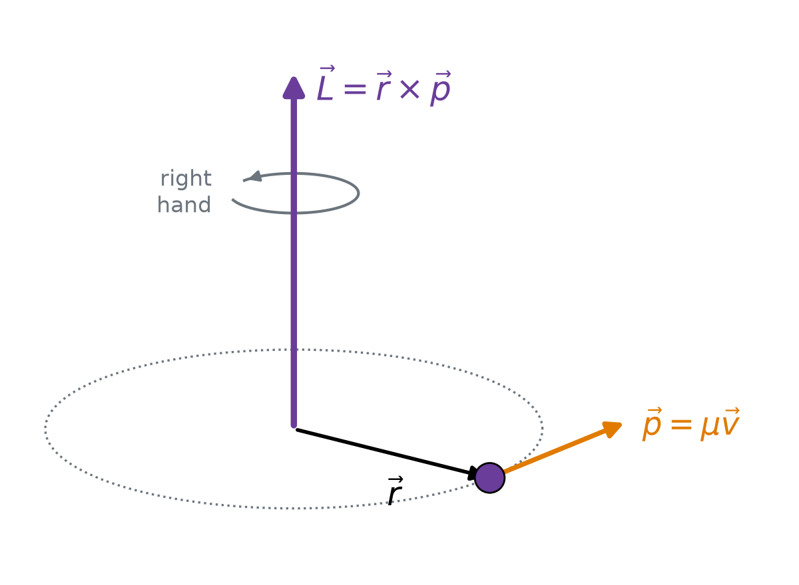
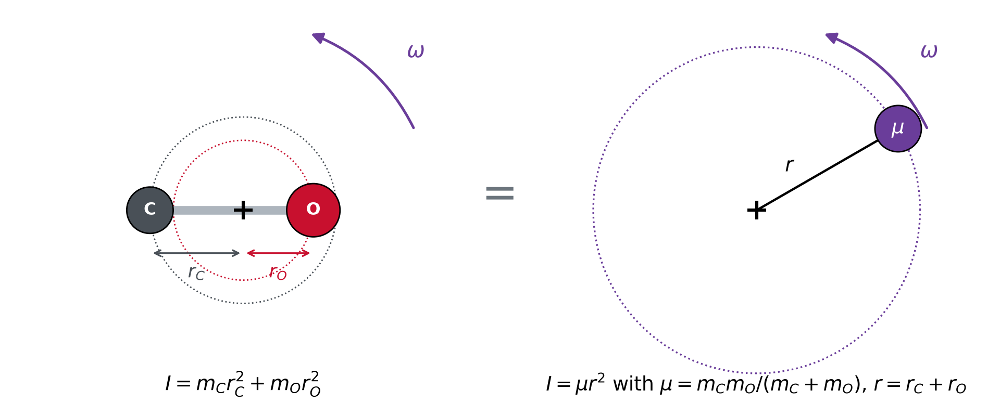
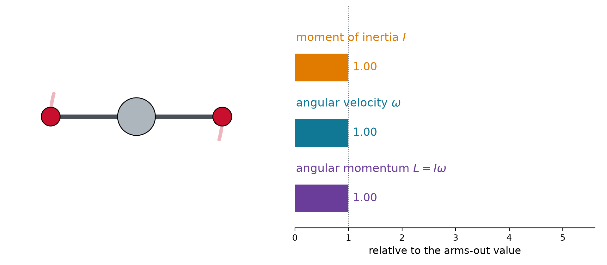
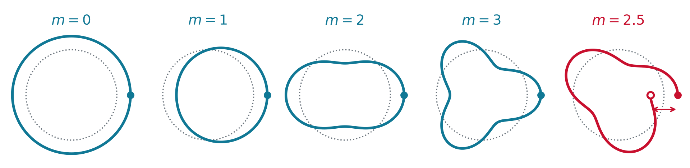
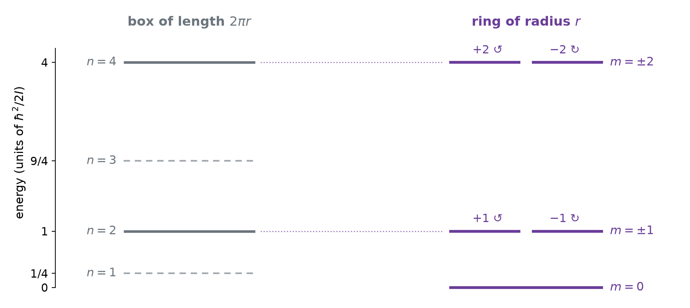
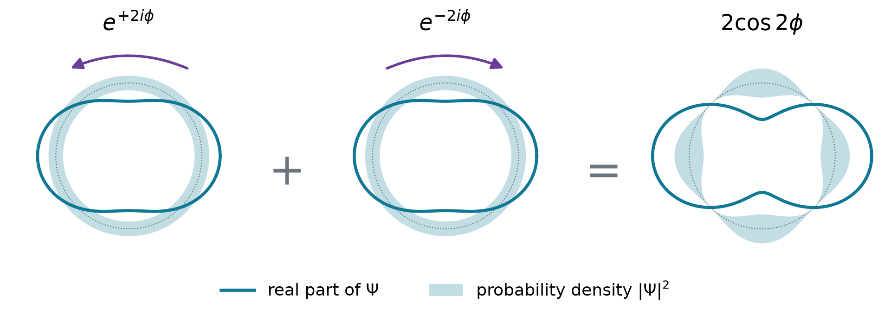
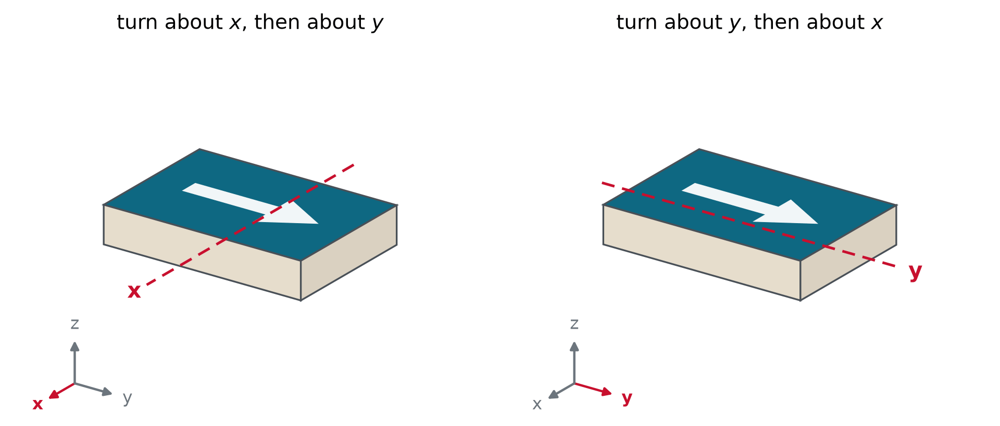
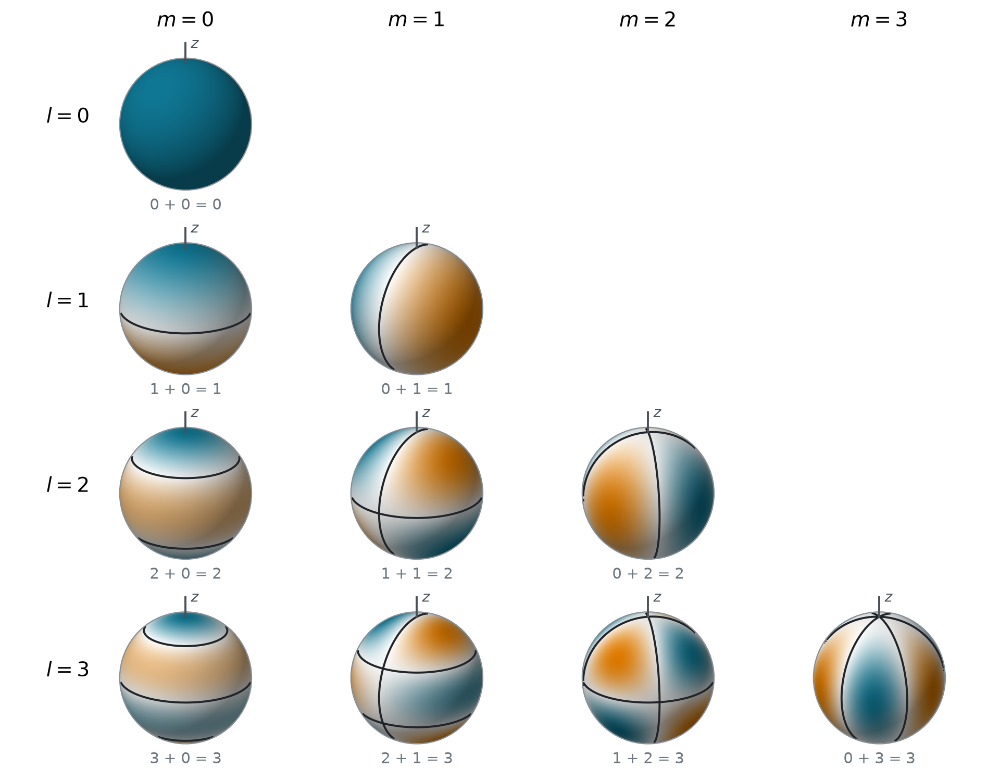
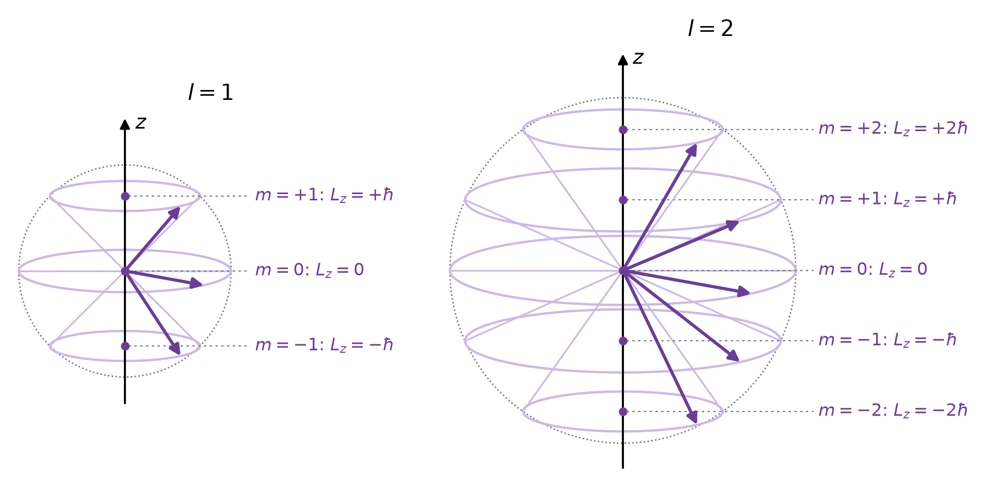

Angular Momentum
Chem 3240 · Lecture 4.4
Our model: a particle on a circle
s = r\phi
\omega = \frac{d\phi}{dt}
\vec{v} = \vec{\omega}\times\vec{r}
v = r\omega
Angular momentum is a vector product
\vec{L} = \vec{r}\times\vec{p} = \begin{vmatrix} \hat{\imath} & \hat{\jmath} & \hat{k} \\ x & y & z \\ p_x & p_y & p_z \end{vmatrix} = \left(yp_z - zp_y,\ zp_x - xp_z,\ xp_y - yp_x\right)

\begin{aligned} L &= rp\sin\alpha && \text{length of } \vec{r}\times\vec{p} \\ &= r\,\mu v && \text{circle: } \alpha = 90^\circ \\ &= \mu r^2\omega && v = r\omega \\ &= I\omega && I = \mu r^2 \end{aligned}
Kinetic energy becomes L^2/2I
\begin{aligned} E &= \tfrac{1}{2}\mu v^2 && \text{kinetic energy} \\ &= \tfrac{1}{2}\mu r^2\omega^2 && v = r\omega \\ &= \tfrac{1}{2}I\omega^2 && I = \mu r^2 \\ &= \frac{L^2}{2I} && \omega = L/I \end{aligned}
\vec{L} = \vec{r}\times\vec{p}, \qquad L = I\omega, \qquad E = \frac{1}{2}I\omega^2 = \frac{L^2}{2I}, \qquad I = \mu r^2
- The same form as p^2/2\mu: L plays the momentum, I plays the mass
Linear and angular: the analogy
| straight line | rotation | |
|---|---|---|
| position | x | angle \phi |
| velocity | v = dx/dt | angular velocity \omega = d\phi/dt |
| inertia | mass \mu | moment of inertia I = \mu r^2 |
| momentum | p = \mu v | angular momentum L = I\omega |
| kinetic energy | p^2/2\mu | L^2/2I |
| changed by | force: dp/dt = F | torque: d\vec{L}/dt = \vec{r}\times\vec{F} |
| conserved when | no force | no torque |
- Quantum mechanics keeps the analogy: \hat{p} = -i\hbar\,d/dx becomes \hat{L}_z = -i\hbar\,d/d\phi
A model system: the rigid dumbbell

- A diatomic turning about its center of mass is one particle \mu on a circle of radius r, the bond length
- Everything so far applies with I = \mu r^2: rotating molecules are particles on circles
No torque, no change: the spinning skater
\frac{d\vec{L}}{dt} = \underbrace{\vec{v}\times\mu\vec{v}}_{0} + \vec{r}\times\frac{d\vec{p}}{dt} = \vec{r}\times\vec{F} = \vec{\tau}

- Pulling inward exerts no torque: L = I\omega stays, so smaller I means faster \omega
Example: the spinning skater
1 turn per second with the arms out, I = 4.0 kg m^2. Arms in: I' = 1.6 kg m^2. New spin rate?
L = I\omega = (4.0)(2\pi) = 25.1\ \text{kg m}^2\,\text{s}^{-1}
\omega' = \frac{L}{I'} = \frac{25.1}{1.6} = 15.7\ \text{s}^{-1} = 2.5\ \text{turns per second}
- Faster by I/I' = 2.5, with the same L. Also: a diver’s tuck, a pulsar, a tumbling molecule
Conservation from symmetry
Noether’s theorem: every continuous symmetry gives a conserved quantity
| nothing changes when you | conserved |
|---|---|
| shift in space | momentum |
| turn about an axis | angular momentum |
| shift the clock | energy |
- Quantum: [\hat{H}, \hat{L}] = 0 (Lecture 3.7), so L can label the states

The same particle, quantum
A mass \mu on a circle of radius r, no potential. Arc length s = r\phi:
\hat{L}_z = r\,\hat{p}_s = -i\hbar\,r\,\frac{d}{ds} = -i\hbar\,\frac{d}{d\phi}, \qquad \hat{H} = \frac{\hat{L}_z^2}{2I} = -\frac{\hbar^2}{2I}\,\frac{d^2}{d\phi^2}
- \hat{L}_z is the momentum operator with an angle in place of x; I plays the mass
- \hat{H} is built from \hat{L}_z, so they commute and share eigenfunctions
The wave must join up
-i\hbar\,\frac{d\Phi}{d\phi} = L_z\Phi \quad\Longrightarrow\quad \Phi = e^{iL_z\phi/\hbar}
\Phi(\phi + 2\pi) = \Phi(\phi) \quad\Longrightarrow\quad e^{2\pi iL_z/\hbar} = 1 \quad\Longrightarrow\quad \frac{L_z}{\hbar} = m = 0, \pm 1, \pm 2, \dots

- m = 2.5: the ends miss, not allowed. The ring closing on itself quantizes m
Particle on a ring
\Phi_m(\phi) = \frac{1}{\sqrt{2\pi}}\,e^{im\phi}, \qquad L_z = m\hbar, \qquad E_m = \frac{m^2\hbar^2}{2I}
m = 0, \pm 1, \pm 2, \dots
- I = \mu r^2. Positive m runs counterclockwise seen from +z, negative m clockwise
- Same speed, opposite directions: \pm m share an energy
Cut the ring open: a box

- The ring keeps the even box levels, twice each, and adds m = 0
- No zero-point energy: \Phi_0 is flat, no curvature; the position is completely unknown
Running and standing waves

\Psi = \frac{1}{\sqrt{2}}\big(\Phi_{+2} + \Phi_{-2}\big) = \frac{\cos 2\phi}{\sqrt{\pi}}, \qquad \hat{H}\Psi = E_2\,\Psi
- m = \pm 2 have the same energy: that is why their superposition is still stationary
- Not sharp in L_z: a measurement gives \pm 2\hbar, each with probability \frac{1}{2}
Example: benzene’s π electrons
Six π electrons on a ring of radius 139 pm. Where should benzene absorb?
\frac{\hbar^2}{2m_e r^2} = \frac{(1.055\times10^{-34}\ \text{J s})^2}{2\,(9.109\times10^{-31}\ \text{kg})(1.39\times10^{-10}\ \text{m})^2} = 1.97\ \text{eV}
Two electrons per state: m = 0 (2) and m = \pm 1 (4). Lowest empty level: \lvert m\rvert = 2.
\Delta E = (2^2 - 1^2)(1.97\ \text{eV}) = 5.9\ \text{eV}, \qquad \lambda = \frac{1240\ \text{eV nm}}{5.9\ \text{eV}} = 210\ \text{nm}
- Benzene absorbs between 180 and 260 nm: colorless, as the model says
Classical and quantum, side by side
| classical particle on a circle | quantum particle on a ring | |
|---|---|---|
| angular momentum | any value, L = I\omega | only L_z = m\hbar |
| energy | any value, L^2/2I | only m^2\hbar^2/2I |
| where it is | a definite angle, \phi = \omega t | with sharp L_z: anywhere, \lvert\Phi_m\rvert^2 = 1/2\pi |
| lowest energy | 0, at rest at a known angle | 0, the angle completely unknown |
| two directions | same energy | the pair \pm m |
- Heavy or large rotors: steps far too small to see. A spinning wheel has m \approx 10^{31}
Three components, three operators
\hat{L}_x = -i\hbar\left(y\frac{\partial}{\partial z} - z\frac{\partial}{\partial y}\right), \qquad \hat{L}_y = -i\hbar\left(z\frac{\partial}{\partial x} - x\frac{\partial}{\partial z}\right)
\hat{L}_z = -i\hbar\left(x\frac{\partial}{\partial y} - y\frac{\partial}{\partial x}\right), \qquad \hat{L}^2 = \hat{L}_x^2 + \hat{L}_y^2 + \hat{L}_z^2
In spherical coordinates, a turn about z changes only \phi, and the chain rule gives
\frac{\partial}{\partial\phi} = x\frac{\partial}{\partial y} - y\frac{\partial}{\partial x} \quad\Longrightarrow\quad \hat{L}_z = -i\hbar\,\frac{\partial}{\partial\phi}\ \ \text{(the ring operator)}
- Each component measures how a function changes under a small turn about its axis
Turns about different axes do not commute

- Same two turns, opposite orders, different results: the components cannot commute
The commutators
Only z and \hat{p}_z fail to commute, [z, \hat{p}_z] = i\hbar, so two of four terms survive:
[\hat{L}_x, \hat{L}_y] = [y\hat{p}_z, z\hat{p}_x] + [z\hat{p}_y, x\hat{p}_z] = -i\hbar\,y\hat{p}_x + i\hbar\,x\hat{p}_y = i\hbar\,\hat{L}_z
[\hat{L}_x, \hat{L}_y] = i\hbar\,\hat{L}_z, \qquad [\hat{L}_y, \hat{L}_z] = i\hbar\,\hat{L}_x, \qquad [\hat{L}_z, \hat{L}_x] = i\hbar\,\hat{L}_y
[\hat{L}^2, \hat{L}_x] = [\hat{L}^2, \hat{L}_y] = [\hat{L}^2, \hat{L}_z] = 0
- Cyclic: x \to y \to z \to x. Two small turns, x then y, differ from y then x by a turn about z
Example: \hat{L}_z turns x into y
Apply \hat{L}_z = -i\hbar\,(x\,\partial_y - y\,\partial_x) to x, y and z. Which combinations are eigenfunctions?
\hat{L}_z\,x = i\hbar\,y, \qquad \hat{L}_z\,y = -i\hbar\,x, \qquad \hat{L}_z\,z = 0
\hat{L}_z\,(x \pm iy) = i\hbar\,y \pm i\,(-i\hbar\,x) = \pm\hbar\,(x \pm iy)
x \pm iy = r\sin\theta\,e^{\pm i\phi}\ \ (m = \pm 1), \qquad z = r\cos\theta\ \ (m = 0)
- A turn about z mixes x and y; the mixtures x \pm iy are the ring’s e^{\pm i\phi} again
Only one component at a time
- Sharp L_x and L_y would need [\hat{L}_x, \hat{L}_y]\psi = i\hbar\hat{L}_z\psi = 0: then all three vanish
- Otherwise: \sigma_{L_x}\sigma_{L_y} \geq \frac{\hbar}{2}\lvert\langle L_z\rangle\rvert (Lecture 3.6)
- \hat{L}^2 commutes with every component: know the length and one projection
- Convention: \hat{L}_z. The z axis is your choice: a magnetic field, a laser’s polarization
- Contrast \hat{p}_x, \hat{p}_y, \hat{p}_z: they commute, and a plane wave has all three sharp
A particle on a sphere
\hat{L}^2 = -\hbar^2\left[\frac{1}{\sin\theta}\frac{\partial}{\partial\theta}\left(\sin\theta\,\frac{\partial}{\partial\theta}\right) + \frac{1}{\sin^2\theta}\frac{\partial^2}{\partial\phi^2}\right]
\nabla^2 = \frac{1}{r^2}\frac{\partial}{\partial r}\left(r^2\frac{\partial}{\partial r}\right) - \frac{\hat{L}^2}{\hbar^2r^2} \qquad\Longrightarrow\qquad \hat{H} = \frac{\hat{L}^2}{2I}\ \ \text{on a sphere of radius } r
- Angles only. A diatomic with fixed bond length: the rigid rotor (Lecture 4.5)
- Separate Y = \Theta(\theta)\,\Phi(\phi): the \phi part is the ring again, e^{im\phi}
- \Theta stays finite at both poles only for L^2 = \hbar^2 l(l+1), whole l \geq \lvert m\rvert
Spherical harmonics
\hat{L}^2\,Y_l^m = \hbar^2\,l(l+1)\,Y_l^m, \qquad \hat{L}_z\,Y_l^m = m\hbar\,Y_l^m
l = 0, 1, 2, \dots \qquad m = -l, \dots, l \quad (2l + 1\ \text{values})
\langle l'm'|lm\rangle = \int_0^{2\pi}\!\!\int_0^{\pi} Y_{l'}^{m'*}\,Y_l^m\,\sin\theta\,d\theta\,d\phi = \delta_{ll'}\,\delta_{mm'}
- l: the length, \sqrt{l(l+1)}\,\hbar. m: the projection on z. Letters s, p, d, f for l = 0, 1, 2, 3
The first few
| l | m | Y_l^m(\theta, \phi) | r^l\,Y_l^m in x, y, z |
|---|---|---|---|
| 0 | 0 | \sqrt{1/4\pi} | \sqrt{1/4\pi} |
| 1 | 0 | \sqrt{3/4\pi}\,\cos\theta | \sqrt{3/4\pi}\,z |
| 1 | \pm 1 | \mp\sqrt{3/8\pi}\,\sin\theta\,e^{\pm i\phi} | \mp\sqrt{3/8\pi}\,(x \pm iy) |
| 2 | 0 | \sqrt{5/16\pi}\,(3\cos^2\theta - 1) | \sqrt{5/16\pi}\,(3z^2 - r^2) |
| 2 | \pm 1 | \mp\sqrt{15/8\pi}\,\sin\theta\cos\theta\,e^{\pm i\phi} | \mp\sqrt{15/8\pi}\,z\,(x \pm iy) |
| 2 | \pm 2 | \sqrt{15/32\pi}\,\sin^2\theta\,e^{\pm 2i\phi} | \sqrt{15/32\pi}\,(x \pm iy)^2 |
- Each is e^{im\phi} times a function of \theta. In x, y, z: a polynomial of degree l
Example: check Y_1^0
Show that Y_1^0 \propto \cos\theta has l = 1 and m = 0.
No \phi in it, so \hat{L}_z\cos\theta = 0: m = 0. Inside out:
\frac{\partial}{\partial\theta}\cos\theta = -\sin\theta, \qquad \frac{1}{\sin\theta}\frac{\partial}{\partial\theta}\left(-\sin^2\theta\right) = -2\cos\theta
\hat{L}^2\cos\theta = 2\hbar^2\cos\theta = \hbar^2\,l(l+1)\cos\theta, \qquad l = 1
l nodal lines on the globe

- Teal +, orange -. Nodes: l - \lvert m\rvert around the axis + \lvert m\rvert through the poles = l
Live: spherical harmonics
The vector model

- Length \sqrt{l(l+1)}\,\hbar, height m\hbar, direction around z unknown: a cone
- \langle L_x^2\rangle + \langle L_y^2\rangle = \hbar^2[l(l+1) - m^2] > 0: never along z. Nothing actually precesses
Example: how close to the z axis?
Find the smallest angle between \vec{L} and z for l = 1, 2 and 10, and for a spinning top with l \approx 10^{31}.
\cos\theta_{\min} = \frac{l}{\sqrt{l(l+1)}}
l = 1: 45°. \ l = 2: 35.3°. \ l = 10: 17.5°. Large l: \theta_{\min} \approx 1/\sqrt{l} \approx 3\times10^{-16} rad for the top.
- Large angular momentum looks classical: the correspondence principle again
Toward the rigid rotor
| ring | sphere | |
|---|---|---|
| sharp | \hat{L}_z | \hat{L}^2, \hat{L}_z |
| states | e^{im\phi}/\sqrt{2\pi} | Y_l^m(\theta, \phi) |
| energies | m^2\hbar^2/2I | l(l+1)\hbar^2/2I |
| states per level | 2 (1 for m = 0) | 2l + 1 |
- A diatomic: \hat{H} = \hat{L}^2/2I, I = \mu R_e^2. Its dipole couples through \cos\theta: \Delta l = \pm 1
- Lecture 4.5: J for l, and microwave spectra
Takeaway
Classically L = I\omega and E = L^2/2I, conserved without torque. On a ring, \hat{L}_z = -i\hbar\,d/d\phi and the wave must join up: L_z = m\hbar with whole m, energies m^2\hbar^2/2I in \pm m pairs from zero. In space the components do not commute, [\hat{L}_x, \hat{L}_y] = i\hbar\hat{L}_z, because turns do not commute: only the length and one projection are sharp. Their eigenfunctions are the spherical harmonics, L^2 = \hbar^2 l(l+1) and L_z = m\hbar with \lvert m\rvert \leq l, with l nodal lines. \vec{L} lies on a cone, never along z.
Chem 3240 · Quantum Mechanics